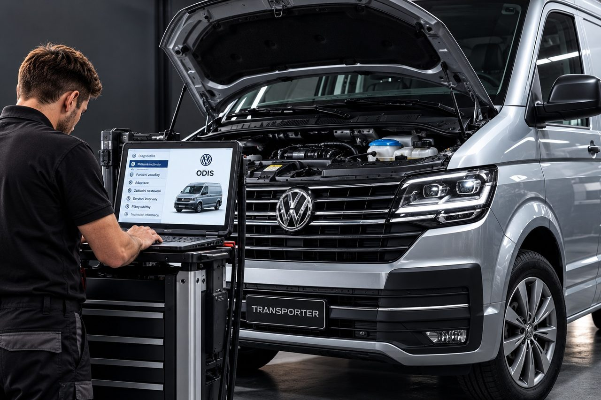

Servis Volkswagen – užitkové vozy
Specializujeme se na diagnostiku, údržbu a opravy vozidel Volkswagen Užitkové vozy od roku výroby 2010. Servisujeme zejména modely Caddy, Transporter, Caravelle, Multivan, California a Crafter; rozsah prací určujeme podle provedení a technického stavu vozidla.
Při diagnostice používáme originální systém ODIS, odbornou měřicí techniku a servisní informace výrobce. Výsledky měření propojujeme s kontrolou vozidla a podle nich navrhujeme další postup opravy.
Pravidelnou údržbu plánujeme podle servisního plánu konkrétního vozu a jeho provozního využití. Potřebné servisní úkony a opravy se zákazníkem předem projednáme, včetně předpokládaného rozsahu a ceny, aby mohl návštěvu servisu zahrnout do plánování provozu.
J&S SERVIS působí ve Statenicích – Černém Volu od roku 1994. Naše zkušenosti s technikou Volkswagen Group využíváme také při údržbě a opravách užitkových vozů.
- Údržba podle provozního využití vozu
- Originální diagnostika ODIS
- Zkušenosti s technikou VW Group od roku 1994

Diagnostika a opravy motorů
Provádíme pravidelné servisní prohlídky, výměny motorových a převodových olejů, filtrů a rozvodových mechanismů. Zajišťujeme diagnostiku a opravy motorů TDI a TSI, turbodmychadel, vstřikovacích, chladicích a emisních systémů včetně DPF, EGR a AdBlue.
Převodovky, podvozek a elektronická výbava
Věnujeme se také servisu manuálních a automatických převodovek, brzdových a podvozkových systémů, řízení, klimatizace a elektronické výbavy vozidel.
Originální diagnostika ODIS
K diagnostice používáme systém ODIS, profesionální měřicí techniku a specializované servisní vybavení. Provádíme vyhledávání závad, vyhodnocování naměřených hodnot, funkční zkoušky a předepsaná základní nastavení podle technických možností konkrétního vozidla.
Servis a údržba vozidel
Servisní a opravárenské práce provádíme podle technologických postupů výrobce. Rozsah oprav stanovujeme na základě technického stavu vozidla a výsledků diagnostiky.
Hybridní a elektrická vozidla
Rozsah údržby a diagnostiky ověřujeme předem podle konkrétního vozidla. Opravy vysokonapěťových trakčních baterií a zásahy do vysokonapěťových komponent nejsou součástí této nabídky.
Servisované modely – Volkswagen – užitkové vozy
Přijetí vozu a rozsah konkrétního úkonu ověřujeme podle VIN. Samotné uvedení modelové řady nepotvrzuje dostupnost všech servisních prací pro každé její provedení.
- Caddy
- Transporter
- Caravelle
- Multivan
- Crafter
- Amarok
- ID. Buzz
- California
- Grand California
- Caddy Cargo
- ID. Buzz Cargo
- e-Transporter
- e-Caravelle
Přehled zahrnuje modelové řady oficiálně určené pro evropský trh, vyráběné alespoň v části období od roku 2010, včetně již nevyráběných modelů. U nově uvedených modelů a elektrických vozidel ověřujeme dostupnost diagnostických funkcí, servisních postupů a náhradních dílů individuálně podle VIN. Rozsah servisních úkonů závisí na konkrétním vozidle a technických možnostech servisu.
Při objednání si připravte VIN, aktuální stav kilometrů a stručný popis požadované práce nebo projevu závady.